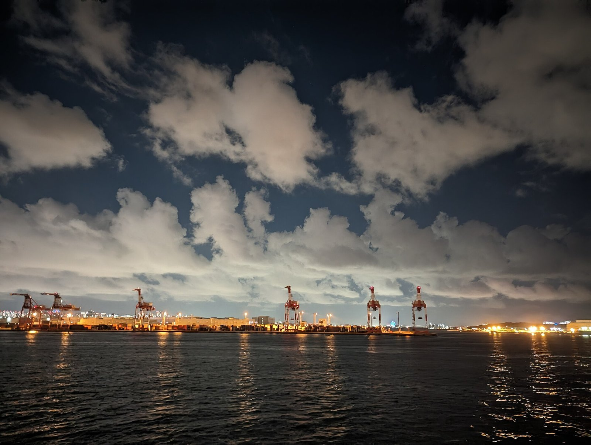
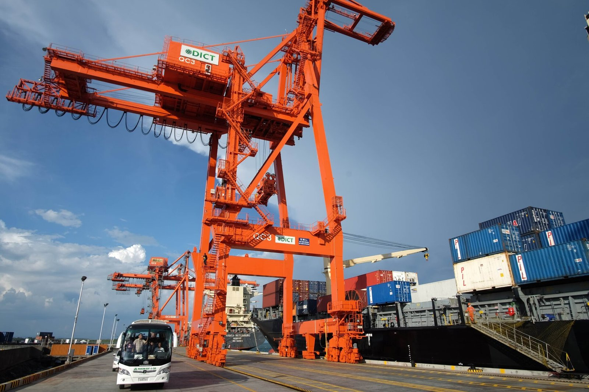
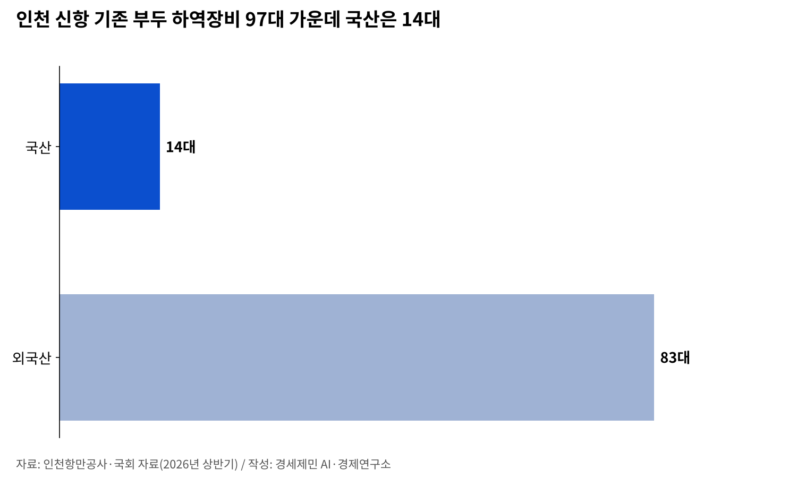
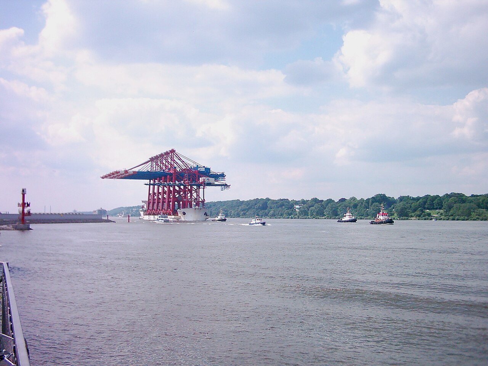
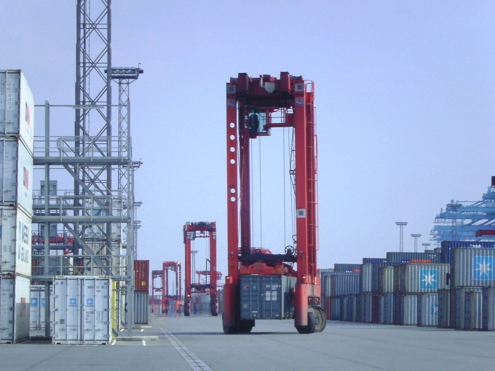

[해양 AI 융복합⑪] 2028년 완전자동화 부두 앞둔 인천 신항, 크레인은 중국산·운영 프로그램은 국산
배에서 장치장까지 원격·무인, 안벽크레인·야드크레인·무인운반차 모두 중국 업체 몫
인천항만공사 AI 전환 시범과제 첫 결과물은 사내 규정 비서
AI경제저널=김갑봉 기자 | 인천항에 배에서 장치장까지 원격·무인으로 돌아가는 부두가 들어선다. 인천 신항 1-2단계 부두는 2028년 하반기 개장이 목표다. 장비는 어디서 오고 운영 프로그램은 누가 공급하는지, 인천항만공사 AI 전환까지 사실로 짚는다.
인천항 첫 완전자동화 부두
인천항만공사는 2026년 3월 16일 인천 신항 1-2단계 컨테이너부두 상부공사를 시작했다. 배를 대는 시설을 짓고 바다를 메우는 하부공사 공정률은 그때 99%였다. 개장 목표 시점은 늦춰졌다. 항만공사는 2024년 5월에는 2027년 개장을 내걸었다.
항만공사는 이 부두를 인천항 첫 완전자동화 터미널이라 부른다. 국내에서는 두 번째다. 배에서 컨테이너를 내려 장치장에 쌓는 일까지 원격·무인으로 할 계획이다.

장치장은 컨테이너를 쌓아 두는 마당이다. 국내에서 처음으로 U자형으로 놓여 부두 안 차량과 밖에서 오는 화물차의 길이 갈린다. 항만공사는 진입도로 정체가 줄어든다고 설명한다.
부두에는 4000TEU급 배를 대는 선석이 3개 생긴다. 선석은 배를 대는 자리이고, TEU는 길이 6m짜리 컨테이너 한 개를 세는 단위다.
운영사가 고른 크레인

부두 운영은 인천글로벌컨테이너터미널(IGCT)이 맡는다. 한진·선광·E1·고려해운·HMM이 함께 세운 회사다. 인천항만공사도 지분을 넣었다.
운영사는 2023년 4월 첫 공고 뒤 재공고를 거듭해 2024년 5월 우선협상대상자로 정해졌다.
입찰에는 국산 장비를 쓰면 주는 가점 3점이 있었다.
자동화 장비는 운영사가 투자해 갖춘다. 운영사는 2025년 4월 크레인 업체를 공모했다. 배에서 짐을 내리는 안벽크레인과 장치장 야드크레인 공급은 중국 국영기업 상하이진화중공업(ZPMC)이 따냈다. 무인운반차도 중국 웨스트웰 몫이다.
국내 업체는 크레인 입찰에 참여하지 못했다.
까닭은 가격과 납품 기한이다. 운영사가 내건 조건을 국내 업체가 맞추지 못했다. 서삼석 더불어민주당 의원이 2026년 4월 해양수산부 자료를 근거로 밝혔다.
조승환 국민의힘 의원은 10월 19일 국정감사에서 이 가점을 따졌다. 국산 장비에 "고작 3점만 부여했다"는 것이다. 이경규 인천항만공사 사장은 국내 장비 업체가 일정 탓에 입찰하기 어렵다는 이야기를 들었다고 답했다.
인천항만공사와 국회 자료를 보면 2026년 상반기 신항 기존 부두 하역장비 97대 가운데 국산은 14대다.

운영 프로그램은 국내 기업 몫

해양수산부는 2023년 1월 19일 스마트항만 기술산업을 키우는 전략을 확정했다. 안벽크레인과 이송장비, 야드크레인, 항만운영 시스템이 대상이다. 그때 장관은 지금 국민의힘 의원인 조승환이다.
2031년까지 국내 시장 국산 점유율을 90%로 올리는 것이 목표다. 국산 기술은 광양항 시험장과 부산항 신항 2-6단계에 먼저 들이기로 했다.
항만공사는 민간 운영사가 장비를 들이는 만큼 국산화를 이끄는 데 한계가 있다고 설명한다. 대신 크레인에 딸린 카메라와 서버, 센서는 국산이나 유럽산으로 채울 계획이다.
자동화 부두의 크레인과 무인운반차는 터미널운영시스템(TOS) 지시대로 움직인다. TOS는 어느 배의 어느 컨테이너를 언제 어디로 옮길지 정하는 운영 프로그램이다.
국내 기업 싸이버로지텍은 2026년 8월 IGCT와 TOS 공급 계약을 맺었다고 밝혔다. TOS는 선석과 장치장, 출입문 운영을 한 시스템으로 묶고 자동화 장비와 잇는다.
자동화 터미널 53곳을 따져 본 국제교통포럼

국제교통포럼(ITF)은 경제협력개발기구(OECD) 안에 사무국을 둔 정부 간 교통 기구다. 2021년 보고서에서 세계 컨테이너터미널 자동화 성과를 분석했다. 일부라도 자동화한 터미널은 53곳이었다.
이들 터미널의 처리능력은 세계 전체의 4% 안팎이었다. 안벽크레인까지 완전히 자동화한 터미널은 없었다. 보고서는 자동화한 항만이 대체로 일반 항만보다 생산성이 높지 않다고 진단했다.
보고서는 자동화 여부보다 항만 조직과 특화, 위치와 규모가 성과를 더 크게 가른다고 분석했다. 자동화하면 인건비는 줄지만 비싼 장비값 부담이 늘어난다. 하역비가 내려가는지는 지역 임금에 달렸다고 짚었다.
보고서는 수출입 화물이 꾸준히 드나드는 관문형 터미널이 자동화에 더 맞는다고 봤다. 배에서 배로 옮겨 싣는 환적 터미널은 물량 변동이 더 크다는 이유다. 자동화 사업의 비용과 이득을 공개하라고도 권했다.
보고서가 꼽은 53곳에는 2016년 자동 야드크레인을 들인 인천 신항 한진인천컨테이너터미널도 있다.
출입문 번호 인식에서 사내 규정 비서까지
인천 신항 선광신컨테이너터미널 출입문에는 화물차 번호를 AI로 읽는 장치가 있다. 항만공사는 2025년 12월 번호 인식률이 98%에서 99.8~100%로 올랐다고 밝혔다.
항만공사는 운영사들과 출입 절차와 하역 작업도 손봤다. 그 결과 2025년 인천항 컨테이너터미널 화물차 반출입 시간이 1년 전 같은 기간보다 8.8% 줄었다고 밝혔다.
항만공사는 2026년 5월 AI 전환 중장기 전략 수립에 들어갔다. 함께 진행한 시범과제 첫 결과물이 8월 20일 직원에게 배포한 AI 규정 비서다.
규정 비서는 사내 규정집과 항만법 같은 법령을 찾아 답과 근거 조항을 함께 보여 준다. 항만공사는 이 방식으로 그럴듯한 거짓 답을 줄인다고 설명한다.
항만공사 사무실에서는 규정 비서가 쓰인다.
부두에서는 중국산 크레인과 국산 운영 프로그램이 2028년 하반기부터 함께 돌아갈 예정이다.
참고문헌
- 해양수산부, 「스마트항만 기술시장 키운다…2031년까지 국내점유율 90%」, 대한민국 정책브리핑, 2023년 1월 19일. https://www.korea.kr/news/policyNewsView.do?newsId=148910769
- 인천항만공사, 「IPA, 인천신항 1-2단계 컨테이너부두 운영사 선정 공고」, 2023년 4월 19일. https://www.icpa.or.kr/article/view.do?articleKey=24341&boardKey=217&menuKey=400
- 인천항만공사, 「IPA, 인천신항 1-2단계 컨테이너부두 운영사 선정 두 번째 재공고 진행」, 2024년 4월 28일. https://www.icpa.or.kr/article/view.do?articleKey=27345&boardKey=217&menuKey=400
- 인천항만공사, 「IPA, 인천신항 1-2단계 컨테이너부두사업 우선협상대상자 선정」, 2024년 5월 17일. https://www.icpa.or.kr/article/view.do?articleKey=27491&boardKey=217&menuKey=400
- 인천항만공사, 「IPA, 인천신항 1-2단계 컨테이너부두 사업 실시협약 체결」, 2024년 11월 12일. https://www.icpa.or.kr/article/view.do?articleKey=28860&boardKey=217&menuKey=400
- 인천항만공사, 「인천 신항, 물류흐름 개선으로 화물차반출입시간 8.8% 감소」, 2025년 12월 28일. https://www.icpa.or.kr/article/view.do?articleKey=31369&boardKey=217&menuKey=400
- 인천항만공사, 「인천항만공사, 인천신항 1-2단계 컨테이너부두 상부공사 착공」, 2026년 3월 16일. https://www.icpa.or.kr/article/view.do?articleKey=31818&boardKey=217&menuKey=400
- 인천항만공사, 「인천항만공사, 인공지능(AI) 전환을 위한 중장기 전략수립 본격 착수」, 2026년 5월 17일. https://www.icpa.or.kr/article/view.do?articleKey=32267&boardKey=217&menuKey=400
- 인천항만공사, 「인천항만공사, 인공지능(AI) 전환을 위해 생성형 AI 실전 적용」, 2026년 8월 20일. https://www.icpa.or.kr/article/view.do?articleKey=32788&boardKey=217&menuKey=400
- ITF, 「Container Port Automation: Impacts and Implications」, 『International Transport Forum Policy Papers』 No.96, OECD Publishing, 2021년 10월. https://doi.org/10.1787/8db18610-en
- CyberLogitec, "CyberLogitec wins TOS contract for Incheon's first fully automated terminal", PR Newswire 배포 보도자료, 2026년 8월 11일. https://kyodonewsprwire.jp/release/202608113981 (싸이버로지텍 누리집 게시본 https://cyberlogitec.com/en/sub/insight/press_view.php?idx=182)
- 최은지, "서삼석 '인천신항 자동화부두 핵심장비, 中기업 독점할 수도'", 연합뉴스(다음 게재), 2026년 4월 24일. https://v.daum.net/v/20260424200215625
- 박서영, "서삼석 의원 'K-스마트항만 중국산이 장악…국산 장비 의무화 촉구'", 뉴스핌, 2026년 4월 27일. https://www.newspim.com/news/view/20260427000323
- 백서원, "국산 크레인은 美 안보 지키고…인천신항은 중국산에 맡겼다", 데일리안, 2026년 10월 15일. https://www.dailian.co.kr/news/view/1701798
- 윤성문, "인천신항 하역장비 모두 중국 업체 낙찰... 국감서 질타", 인천in, 2026년 10월 19일. http://www.incheonin.com/news/articleView.html?idxno=121588
[사진·도표 출처]
- [사진1] Syced, 「Container cranes in Tokyo Bay.jpg」, 2023년 8월 26일, 위키미디어 공용, CC0 1.0. https://commons.wikimedia.org/wiki/File:Container_cranes_in_Tokyo_Bay.jpg
- [사진2] ROBINSON NIÑAL/PPD(필리핀 대통령실 공보국), 「Ship-to-shore cranes at the Davao International Container Terminal.jpg」, 2016년 9월 2일, 위키미디어 공용, 퍼블릭 도메인. https://commons.wikimedia.org/wiki/File:Ship-to-shore_cranes_at_the_Davao_International_Container_Terminal.jpg
- [사진3] GeorgHH, 「Containerbücken für Eurogate 001.jpg」, 2007년 5월, 위키미디어 공용, 퍼블릭 도메인. https://commons.wikimedia.org/wiki/File:Containerbücken_für_Eurogate_001.jpg
- [사진4] Garitzko, 「Van carrier ct bremerhaven.jpg」, 2010년, 위키미디어 공용, 퍼블릭 도메인. https://commons.wikimedia.org/wiki/File:Van_carrier_ct_bremerhaven.jpg
- [사진5] Jim.henderson, 「NY Container Terminal Goethals gate jeh.jpg」, 2013년 6월 20일, 위키미디어 공용, CC0 1.0. https://commons.wikimedia.org/wiki/File:NY_Container_Terminal_Goethals_gate_jeh.jpg
- [도표1] 경세제민 AI·경제연구소 작성. 자료 인천항만공사·국회 자료(2026년 상반기 인천 신항 기존 부두 하역장비)
※ 이 기사는 AI 프로그램 클로드를 활용해 작성했습니다.
관련기사
- [해양 AI 융복합⑩] 부두 하나서 효율 17% 올린 디지털 트윈, 부산항 전체로 넓히는 388억원 계획
- [해양 AI 융복합⑨] 미 해군 함정 고치는 한국 조선소, AI 정비 앞에 놓인 군 데이터 빗장
- [해양 AI 융복합⑧] 사람이 모자란 조선소, 데이터와 로봇으로 다시 짜는 건조 공정
- [인천해양주권⑭] 항만공사 통합에 기업청산만 바라보는 인천
저작권자 © AI경제저널 무단전재 및 재배포, AI학습 및 활용 금지